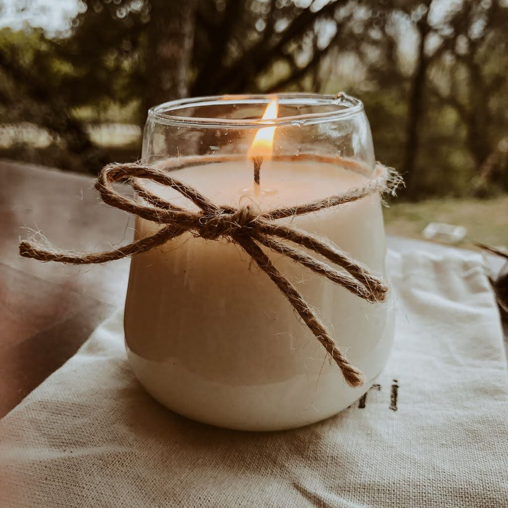
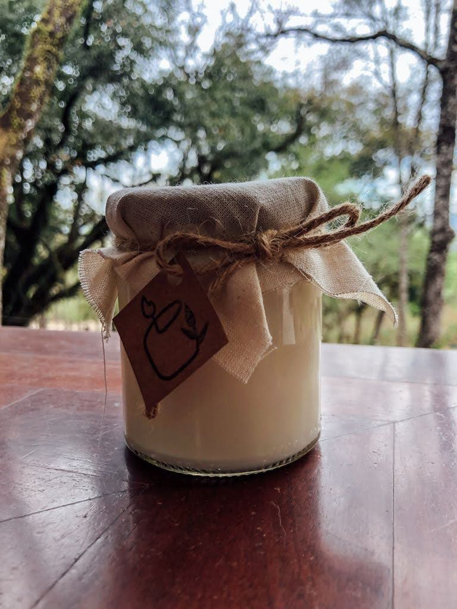
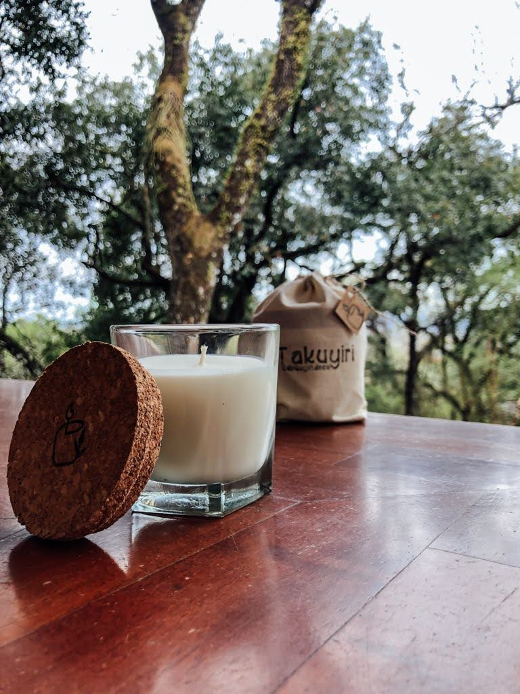
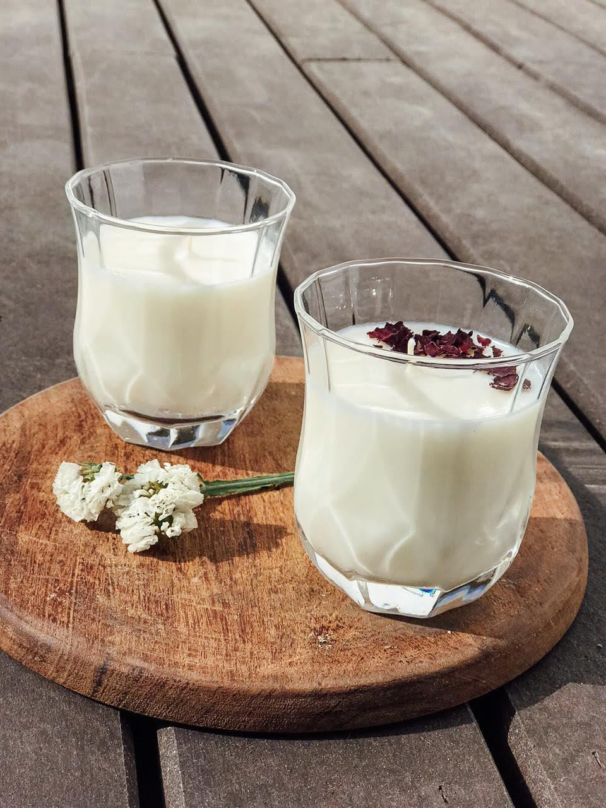
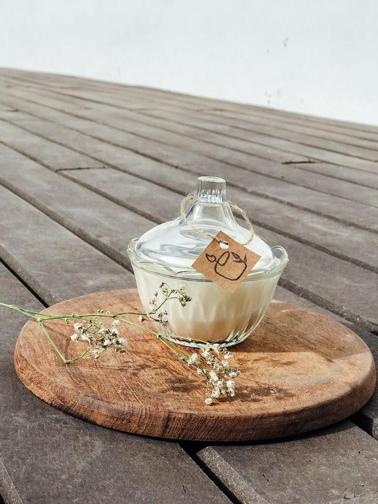
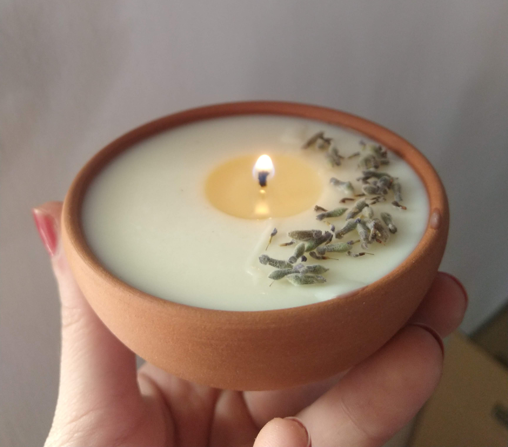

Modelos
Los modelos disponibles son
Las animaciones están en la transparencia de las imágenes
Volcán
Lola
Honolulu
Cristal
Misky
Ceramica
Aromas
Como ya les contamos, las velas de soja permiten perfumar los ambientes de forma suave y delicada aún estando apagadas, pueden elegirse aromas acorde al gusto de cada uno o para usarlas para hacer aromaterapia.
La aromaterapia es una disciplina que aprovecha las propiedades de ciertos aromas extraídos de plantas, para restablecer el equilibrio del cuerpo y de la mente.
¿Conoces las propiedades de cada aroma?
| Aroma | Significado |
|---|---|
| Rosa | Trae sentimientos de alegría y tranquilidad. Alivia la depresión y ayuda a combatir el insomnio, dolores de cabeza, tristeza y estrés en general |
| Lavanda | Relajante, elimina la ansiedad y el estrés, ayuda a disipar las mentes cansadas |
| Jazmín | Tiene acción afrodisíaca, aumenta la actitud positiva, alivia, reduce el estrés, equilibra las hormonas y ayuda con la depresión posparto |
| Sandía | Reduce el ambiente negativo. Aporta frescura y liviandad. Endulza los ambientes |
| Coco y Vainilla | Combate la depresión y actitudes impulsivas, armoniza y tiene una función afrodisíaca. Además limpia las energías negativas |
| Frutos Rojos | Aumenta la vitalidad y la energía. Usado para calmar ambientes y refrescar atmósferas tensas. Favorece y estimula la sensualidad |